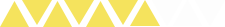
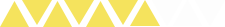
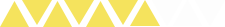

"
다정
한
디자인을 추구하는김민주입니다
"

사람들에게 다정하고 위로가
될 수 있는 디자인을 할 수 있는
디자이너가 되겠습니다.
Kim Min Ju.
1995.03.29
Tel 010-4938-3832
E-mail pchreey1076@gmail.com2
Education
2014년 영복여자 고등학교 졸업
2016년 수원여자대학교 비주얼 콘텐츠과 졸업
HOBBY

음악듣기

영화보기
독서하기
문예창작
SKLLS
Photoshop
 


Illustrator


JavaScript


jQuery


01
주제
- 레스토랑 홈페이지
색
- 레스토랑의 분위기에 맞으며
본 레스토랑의 음식을 살리기
위해서 노란색 계열을 선택했습니다.
레이아웃
- 레이아웃은 전체 홈페이지는 패밀리 레스토랑으로
밝은 분위기를 살렸습니다, 레스토랑의 중요 포인트가 음식
인 만큼, 음식 메뉴의 소개를 중심으로 레이아웃을 설계했습니다 ,

02
주제
- 침대 회사 홈페이지
색
- 침대의 편안함을 잘 표현할 수 있고
침대를 가장 많이 사용하는 시간이 밤이
입니다. 밤을 표현하는 남색과 노란색을 중점으로 선
택하였습니다.
레이아웃
-본 회사의 메인 홈페이지로 만드었습니다.
메인 홈페이지, 전체적인 레이아웃은 회사에서 판매하는 상품
"침대"를 소비자에게 한눈에 설명하기 위해서
전체적으로 큰 이미지를 사용했습니다.

03
주제
색
- 자연을 표현할 수 있는 초록색
을 선택했으며, 전체적으로 무채색
계열을 사용했습니다.
레이아웃
-본 홈페이지는 회사 소개보다는
상품 소개 홈페이지로 만들었습니다
회사에서 밀고 있는 주 상품을 소비자층에게
뚜렷하게 소개 할 수 있는 레이아웃을 설계
했습니다.

04
주제
-화장품(립스틱) 소개
색
- 소개하고자 하는 립스틱의 색깔이
면서 여성적스러움이 잘 나타나는 색
인 분홍색을 사용했습니다.
레이아웃
- 회사에서 새로이 발표한 신제품이라는
주제로, 이벤트 페이지의 형식으로 만들
었습니다. 본 립스틱의 소비 연령층이
젋은 세대인 만큼,전체적으로 발랄한 느
낌으로 표현했습니다.

05
주제
-자동차 소개, 이벤트 홈페이지
색
- 정렬적인 느낌을 포현하기위해서
붉은색 계역을 선택했습니다. 다만
밝은 붉으색 보다는 고급스러운
어두운 붉은 계역을 선택했습니다.
레이아웃
- 본 회사에서 내놓은 신 제품. 자동차의
강렬한 인상을 소비자에게 명확하게 남기기 위해,
레이아웃 보다는 홈페이지 디자인에 중심을 뒀습니다.

06
주제
- 펜션 홈페이지
색
- 여행의 편안하고 아늑한 느낌을
잘 표현해줄 수 있는 파란색 계열
남색을 선택했습니다.
레이아웃
- 본 회사의 메인 홈페이지로 만들었습니다.
본 펜션의 예약 기능등 서비스와, 펜션의 분위기 기능을 설명하고
무엇보다 서비스 제공이 중요한 만큼 서비스를
소비자에게 확실하게 전할수 있는 레이아웃으로 설계했습니다.

07
주제
색
- 회사의 대표색이 주황색이며.
온화하고 활동적인 느낌을 전해주는 색을
선택했습니다
레이아웃
- 본 회사의 메인 홈페이지로 만들었습니다.
정확히 회사를 설명하는 페이지로 만들었
습니다. 그래서 회사의 솔루션, 회사의 목표
회사가 주장하는 이미지를 잘 표현하기 위한
레이아웃으로 만들었습니다.

08
주제
-인테리어 회사
색
- 고급스럽고 우아하며 그리고
진환경적인 느낌을 표현해주는 갈색계열
로 선택했습니다.
레이아웃
- 본 회사의 메인 홈페이지로 만들었습니다.
회사와그리고 회사의 능력을 동시에 표현 할 수
있도록 레이아웃을 설계했습니다.
그래서 인테리어를 전체적으로 크게 보여주고
회사 소개를 중점적으로 선택했습니다.


09
주제
색
- 봄의 꽃 라일락의 색깔이면서 가장
고급스러운 색인 보라색으로 색을
선택했습니다.
레이아웃
- 본 회사의 메인 홈페이지로 만들었습니다.
회사의 올 봄 대표 상품을 소개하는 홈페이지
입니다. 상품을 소개 하는 동시에 회사의 분위기로 설명하는
레이아웃으로 맞췄습니다

10
주제
색
- 회사 메인 색보다는 소개 하는 노트북의 색을 메인 색으로
활용했습니다.
레이아웃
- 노트북 소개 홈페이지, 메인 홈페이지를 만들었습니다.
심플하고 디자인 홈페이지에 힘을 뺐습니다. 본 제품의
시선이 더 많이 갈 수 있도록 레이아웃을 짰습니다.